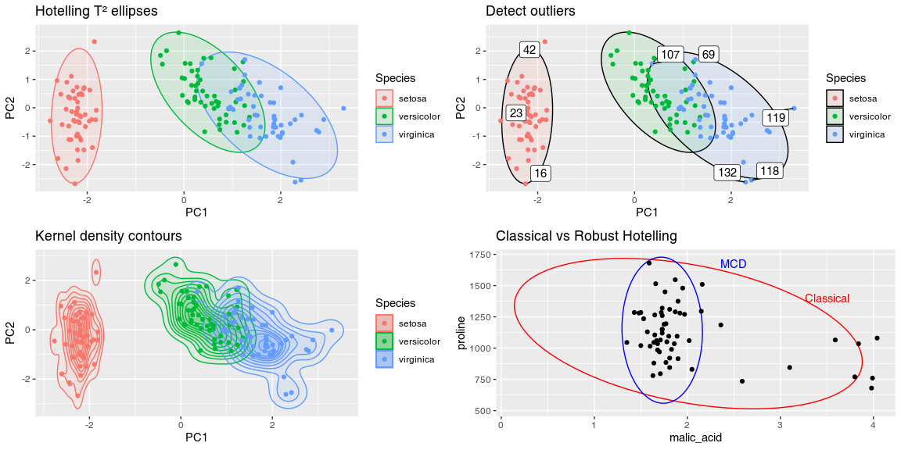
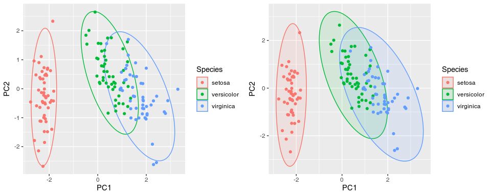

Here are a few examples of plots you can create with gghotelling:

Features:
- Classical Hotelling and data ellipses with
geom_hotelling() - Robust Hotelling ellipses using MCD estimator with
robust=TRUE - Hotelling confidence ellipses for group means with
type="t2mean" - Kernel density coverage contours with
geom_kde() - Outlier detection and visualization with
stat_outliers() - Convex hulls with
geom_hull() - Autoplot and autolayer methods for
prcompobjects
See the vignette for more details.
Installation
You can install the development version of gghotelling from GitHub with:
# install.packages("pak")
pak::pak("january3/gghotelling")Minimal Example
The package defines a new geom, geom_hotelling(), which can be used to add Hotelling ellipses to ggplot2 scatter plots. Here are two examples of usage:
library(ggplot2)
library(gghotelling)
pca <- prcomp(iris[, 1:4], scale.=TRUE)
df <- cbind(iris, pca$x)
# minimum example
p1 <- ggplot(df, aes(PC1, PC2, color=Species)) +
geom_hotelling() +
geom_point()
# set custom CI/coverage level
p2 <- ggplot(df, aes(PC1, PC2, color=Species)) +
geom_hotelling(alpha=0.1, aes(fill = Species), level=.99) +
geom_point()
plot_grid(p1, p2, ncol=2)